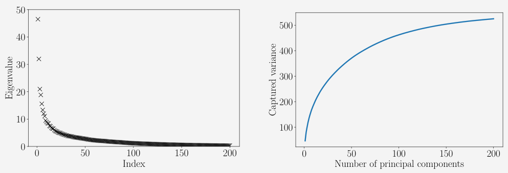

P1. 숫자 8의 누적 설명 분산
주어진 조건
MNIST 학습 데이터에서 숫자 8만 골라 공분산 행렬 $\mathbf S$를 구했어요. $\mathbf S$의 고윳값을 큰 순서로 $\lambda_1\ge\lambda_2\ge\cdots$라 하고, 앞에서부터 $M$개의 주성분이 담는 누적 설명 분산을 $V_M$이라 해요. 정리노트에서 배운 식으로는 다음과 같아요.
$$V_M=\sum_{m=1}^{M}\lambda_m$$왼쪽은 큰 고윳값 200개를 순서대로 찍은 그래프이고, 오른쪽은 주성분 개수 $M$에 따른 $V_M$ 그래프예요.
구할 것
- (a) $M$번째 주성분을 추가할 때 늘어나는 양 $V_M-V_{M-1}$을 고윳값으로 나타내 보세요.
- (b) (a)의 결과를 써서, 주성분을 처음 몇 개 추가할 때와 뒤에서 추가할 때 중 어느 쪽에서 누적 설명 분산이 크게 늘어나는지 왼쪽 그래프를 근거로 설명해 보세요.

원문 보기
“We see that only a few of them have a value that differs significantly from 0.” — Example 10.2문제를 내 말로 읽어요
숫자 8 이미지만 모아 PCA를 했어요. 주성분을 하나씩 더할 때마다 담기는 분산이 얼마나 늘어나는지, 그리고 그 증가가 앞쪽과 뒤쪽 중 어디서 큰지를 묻는 문제예요.
주어진 것은 누적 설명 분산의 식 ${V_M=\sum_{m=1}^{M}\lambda_m}$과 그래프 두 개예요. 왼쪽 그래프는 가로축이 고윳값의 순서(Index), 세로축이 그 고윳값(Eigenvalue)이에요. 오른쪽 그래프는 가로축이 주성분 개수 $M$, 세로축이 $V_M$(Captured variance)이에요.
(a)는 이웃한 두 누적값의 차이 ${V_M-V_{M-1}}$을 고윳값으로 쓰는 계산이고, (b)는 (a)의 식과 왼쪽 그래프를 이어서 앞쪽과 뒤쪽의 증가 폭을 비교하는 설명이에요.
이 문제를 봤을 때 떠올릴 개념과 공식
‘주성분을 하나 추가할 때 늘어나는 양’이라는 말에서는 누적합의 이웃 차이를 떠올려요. 누적합에서 앞의 $M-1$개 항은 두 값에 똑같이 들어 있으니, 빼면 마지막 항 하나만 남아요.
‘공분산 행렬의 고윳값’이라는 단서에서는 정리노트의 방향 분산을 떠올려요. 단위 고유벡터 $\mathbf p_m$ 방향으로 사영한 좌표의 분산은 ${\mathbf p_m^\top\mathbf S\mathbf p_m=\lambda_m}$이에요. 그래서 고윳값(eigenvalue) $\lambda_m$은 $m$번째 주성분 방향 하나에 담긴 분산이에요.
상위 $M$개 고유벡터를 축으로 고르면, 서로 직교하는 축의 분산을 더한 누적 설명 분산(captured variance)은 다음과 같아요. 고윳값을 큰 순서로 늘어놓았으니 $\lambda_1\ge\lambda_2\ge\cdots$예요.
$$V_M=\sum_{m=1}^{M}\lambda_m$$이 식을 쓰면 왼쪽 그래프의 점 하나의 높이가 오른쪽 곡선의 한 칸 상승 폭과 같다는 연결을 만들 수 있어요. 첫 번째부터 M번째까지 방향 고르기에서 같은 식을 다뤘어요.
종이에 쓸 첫 줄
두 누적합을 같은 모양으로 나란히 적어요. 마지막 항만 따로 떼어 쓰면 비교가 쉬워져요.
$$V_M=\lambda_1+\cdots+\lambda_{M-1}+\lambda_M,\qquad V_{M-1}=\lambda_1+\cdots+\lambda_{M-1}$$왜 이렇게 푸는지 함께 따라가요
(a) 한 칸 늘어날 때의 증가량
첫 줄의 두 식을 빼요. $\lambda_1$부터 $\lambda_{M-1}$까지는 두 식에 똑같이 있어서 모두 지워지고 $\lambda_M$만 남아요.
$$V_M-V_{M-1}=\sum_{m=1}^{M}\lambda_m-\sum_{m=1}^{M-1}\lambda_m=\lambda_M$$$M$번째 주성분을 추가하면 누적 설명 분산은 그 주성분 방향의 분산인 $\lambda_M$만큼 늘어요.
(b) 왼쪽 그래프로 증가 폭 비교하기
(a)에 따라 오른쪽 곡선이 $M-1$에서 $M$으로 한 칸 갈 때 오르는 높이는 왼쪽 그래프의 $M$번째 점 높이 $\lambda_M$이에요. 그래서 왼쪽 점들의 높이만 읽으면 증가 폭을 비교할 수 있어요.
왼쪽 그래프를 읽어요. 첫째 고윳값은 약 46, 둘째는 약 32로 커요. 그 뒤로 셋째가 약 21, 다섯째쯤이 약 15로 빠르게 작아지고, 50번째 근처에서는 2~3 정도, 200번째 근처에서는 1보다 작아요.
앞쪽 $\lambda_M$이 크니 처음 몇 개를 추가할 때는 한 칸마다 수십씩 올라 $V_M$이 가파르게 늘어요. 뒤로 갈수록 $\lambda_M$이 작아져 한 칸의 상승이 작아지므로 곡선이 완만해져요. 다만 뒤쪽 고윳값도 양수라서 곡선은 200개까지 멈추지 않고 조금씩 계속 올라요.
따라서 주성분을 처음 몇 개 추가할 때 누적 설명 분산이 크게 늘고, 뒤에서 추가할 때는 완만하게 늘어요.
완성 답과 검산
(a) 검산
$M=1$을 넣어 봐요. 아무 축도 고르지 않았을 때 담긴 분산은 0이므로 $V_0=0$이고, ${V_1-V_0=\lambda_1}$이에요. 오른쪽 곡선의 시작점 높이가 약 46으로 왼쪽 첫 점 ${\lambda_1\approx46}$과 같아 식과 그래프가 맞아요. $M=2$에서도 ${V_2\approx46+32=78}$이 오른쪽 곡선의 둘째 칸 높이와 비슷해요.
(b) 검산
오른쪽 곡선에서 같은 폭(50개)의 구간을 비교해요. 0개에서 50개까지는 0에서 약 370으로 약 370 늘었어요. 150개에서 200개까지는 약 505에서 약 525로 약 20 늘었어요. 앞쪽 구간의 증가가 훨씬 커서 (b)의 판단과 맞아요. 뒤쪽 구간도 20 정도는 올랐으니 뒤쪽 고윳값이 0은 아니라는 것도 함께 확인돼요.
이 문항에서 조심할 점
오른쪽 곡선의 높이는 지금까지 담은 분산 $V_M$이고, 왼쪽 점의 높이는 한 칸의 상승 폭 $\lambda_M$이에요. 오른쪽 곡선에서 $M=100$의 높이 약 460을 $\lambda_{100}$으로 읽으면 안 돼요. 왼쪽 그래프에서 $\lambda_{100}$은 1~2 정도예요.
‘뒤쪽 증가가 작다’를 ‘뒤쪽 고윳값은 버려도 0이다’로 바꿔 읽으면 안 돼요. 50개에서 200개까지 곡선이 약 370에서 약 525로 약 155 더 올랐어요. 하나하나는 작아도 개수가 많으면 합이 커요.
$V_M$은 분산의 합이지 비율이 아니에요. ‘몇 퍼센트를 담았는지’를 말하려면 전체 분산으로 나눠야 하는데, 그래프에는 200개까지만 있어서 이 문항에서는 비율을 구하지 않아요.
설명을 닫고 다시 해 봐요
설명을 보지 않고 아래 순서대로 종이에 다시 풀어 봐요.
- ${V_M}$과 ${V_{M-1}}$을 나란히 적고 빼서 ${V_M-V_{M-1}=\lambda_M}$을 다시 얻어요.
- 두 그래프의 세로축이 각각 무엇인지(한 칸의 상승 폭과 누적 높이) 말해 봐요.
- 왼쪽 앞쪽 점과 뒤쪽 점의 높이를 읽고, 오른쪽 곡선의 기울기와 이어서 설명해요.
떠올릴 개념·공식
$\lambda_m$은 $m$번째 주성분 방향의 분산이에요. 누적 설명 분산은 ${V_M=\sum_{m=1}^{M}\lambda_m}$이에요.
첫 줄
$V_M$과 $V_{M-1}$을 마지막 항만 떼어 나란히 적어요.
핵심 답
(a) ${V_M-V_{M-1}=\lambda_M}$이에요.
(b) 앞쪽 고윳값(약 46, 32)이 크고 빠르게 작아지므로, 처음 몇 개를 추가할 때 크게 늘고 뒤로 갈수록 완만하게 늘어요. 곡선은 200개까지 조금씩 계속 올라요.
검산
오른쪽 시작 높이 약 46이 $\lambda_1$과 같아요. 0→50개는 약 370, 150→200개는 약 20 올라요.
조건·구분
오른쪽 높이는 누적값, 왼쪽 점은 한 칸의 상승 폭이에요. 뒤쪽 고윳값도 작지만 0은 아니에요.
용어
- 고윳값(eigenvalue)
- 공분산 행렬 $\mathbf S$에서 ${\mathbf S\mathbf p_m=\lambda_m\mathbf p_m}$을 만족하는 수예요. 단위 고유벡터 $\mathbf p_m$ 방향의 분산과 같아요.
- 주성분(principal component)
- 큰 고윳값부터 고른 공분산 행렬의 단위 고유벡터 방향이에요. 서로 직교해요.
- 누적 설명 분산(captured variance)
- 앞에서부터 $M$개 주성분이 담는 분산의 합 ${V_M=\sum_{m=1}^{M}\lambda_m}$이에요. 비율이 아니라 분산의 합이에요.
출제 근거
MML Example 10.2와 그림 10.5, 교과서 324–325쪽(PDF 330–331쪽), 식 (10.24).
수업: 1104 L05 s27–28(상위 $M$개 방향과 보존 분산).
관련 정리노트: 첫 번째부터 M번째까지 방향 고르기